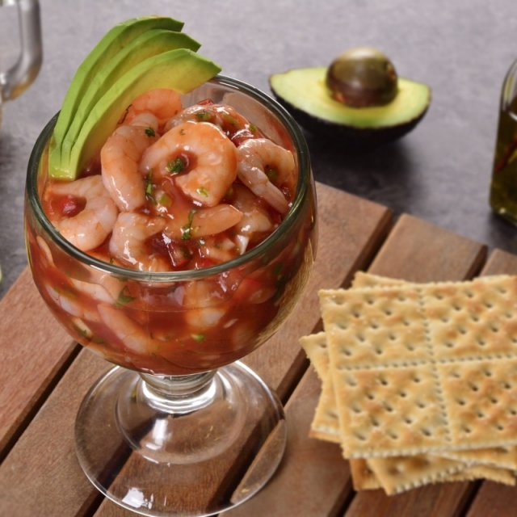

COCTEL DE CAMARONES
A seafood dish cooked with a spicy sauce of some kind is of ancient origin and many varieties exist. Oyster or shrimp dishes of this type were popular in the United States in the late 19th century, and some sources link the serving of the dish in cocktail glasses to the prohibition of alcoholic beverages during the prohibition era of the 1920s. in the United States. A version of the shrimp cocktail became popular in Las Vegas casinos in the late 1950s (beginning with the Golden Gate Casino on Fremont Street; they sold up to 2,000 shrimp cocktails a day, at cheap prices, no more than 99 cents), and is considered somewhat synonymous with the mecca of gaming and entertainment
